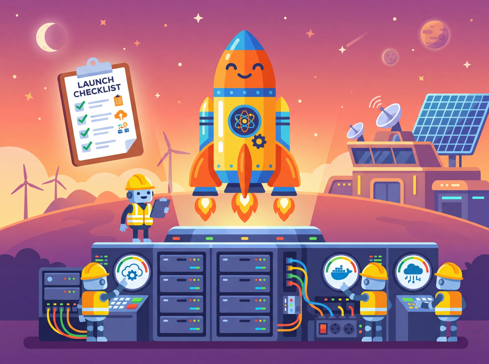
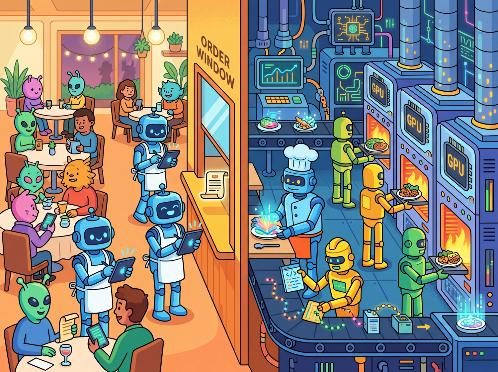

The first 90 percent of deployment accounts for the first 90 percent of the budget. The remaining 10 percent accounts for the other 90 percent of the headaches.
Deploy AI Agent

Prerequisites
This section builds on llm apis from Section 10.1: API Landscape and Architecture and agent concepts covered in Section 22.1: Foundations of AI Agents.
A well-designed LLM application architecture separates model inference, business logic, and API layers so that each can scale, version, and fail independently. Whether you deploy on a dedicated GPU cluster, a managed cloud endpoint, or a serverless function, the same architectural principles apply: stateless request handling, streaming for low perceived latency, health checks for reliability, and containerization for reproducibility. Building on the serving frameworks from Section 09.4, this section covers the full deployment stack from local development with FastAPI through production deployment on AWS, GCP, Azure, and serverless platforms.
1. API Layer with FastAPI Intermediate
Your model works perfectly in a Jupyter notebook. Now 500 users need to call it simultaneously, and each request takes 10 seconds to generate. Without proper architecture, the 501st user waits 10 minutes. FastAPI solves this with native asynchronous request handling, automatic OpenAPI documentation, and Pydantic validation, making it the dominant framework for serving LLM applications in Python. The key design pattern is to separate the API layer from the model inference layer, allowing you to swap models without changing the API contract.
Think of your LLM deployment architecture like a restaurant. The API layer is the front-of-house staff taking orders and delivering plates, while the model inference layer is the kitchen doing the actual cooking. Just as a restaurant can swap chefs or change recipes without retraining waiters, separating your API from your model lets you upgrade, swap, or scale the inference backend independently. The analogy thins when you consider that real kitchens do not need to handle 500 simultaneous orders in under a second, but the principle of decoupled responsibilities holds.
This separation matters even more for LLM applications than for traditional web services. Models change frequently (new versions, different providers, fine-tuned variants), and deployment constraints differ across environments (cloud GPU, serverless, on-premise). If the API contract is stable and well-documented, you can swap GPT-4o for Claude Sonnet or a self-hosted Llama variant without touching a single line of frontend code. This also enables the A/B testing patterns covered in Section 31.4.

Basic Chat Completion Endpoint
This snippet creates a FastAPI endpoint that wraps an LLM chat completion call with streaming support.
# Define ChatRequest
# Key operations: API endpoint setup, API interaction
from fastapi import FastAPI
from fastapi.responses import StreamingResponse
from pydantic import BaseModel
from openai import AsyncOpenAI
import json, asyncio
app = FastAPI(title="LLM Chat API", version="1.0")
client = AsyncOpenAI()
class ChatRequest(BaseModel):
messages: list[dict[str, str]]
model: str = "gpt-4o-mini"
temperature: float = 0.7
stream: bool = False
@app.post("/v1/chat")
async def chat(req: ChatRequest):
if req.stream:
return StreamingResponse(
stream_response(req), media_type="text/event-stream"
)
response = await client.chat.completions.create(
model=req.model,
messages=req.messages,
temperature=req.temperature,
)
return {"content": response.choices[0].message.content}
async def stream_response(req: ChatRequest):
stream = await client.chat.completions.create(
model=req.model, messages=req.messages,
temperature=req.temperature, stream=True
)
async for chunk in stream:
delta = chunk.choices[0].delta.content
if delta:
yield f"data: {json.dumps({'content': delta})}\n\n"
yield "data: [DONE]\n\n"Always use AsyncOpenAI (not the synchronous client) inside FastAPI to avoid blocking the event loop. A synchronous call in an async endpoint will serialize all concurrent requests, destroying throughput under load.
Google's Bard (now Gemini) lost $100 billion in market value on its launch day because it gave a factually incorrect answer about the James Webb Space Telescope in a demo. A single hallucination, in a single public demo, moved financial markets. This incident crystallized why production safety is not optional; it is existential for AI products.
2. Streaming Protocols: SSE and WebSockets Intermediate
Streaming is essential for LLM applications because token generation is sequential. Without streaming, users stare at a blank screen for several seconds before seeing any output. Two protocols dominate LLM streaming: Server-Sent Events (SSE) for unidirectional streaming and WebSockets for bidirectional communication. Figure 31.1.1 compares these two protocols side by side. Code Fragment 31.1.3 below puts this into practice.
LitServe for High-Performance Serving
Code Fragment 31.1.2 demonstrates this approach in practice.
# Define LLMServingAPI; implement setup, decode_request, predict
# Key operations: training loop, prompt construction
import litserve as ls
from transformers import AutoModelForCausalLM, AutoTokenizer
import torch
class LLMServingAPI(ls.LitAPI):
def setup(self, device):
"""Load model once during server startup."""
self.tokenizer = AutoTokenizer.from_pretrained("microsoft/phi-2")
self.model = AutoModelForCausalLM.from_pretrained(
"microsoft/phi-2", torch_dtype=torch.float16
).to(device)
def decode_request(self, request):
return request["prompt"]
def predict(self, prompt):
inputs = self.tokenizer(prompt, return_tensors="pt").to(self.model.device)
outputs = self.model.generate(**inputs, max_new_tokens=256)
return self.tokenizer.decode(outputs[0], skip_special_tokens=True)
def encode_response(self, output):
return {"generated_text": output}
# Launch with: python server.py
if __name__ == "__main__":
api = LLMServingAPI()
server = ls.LitServer(api, accelerator="gpu", devices=1)
server.run(port=8000)3. Containerization with Docker Compose Intermediate
This snippet defines a Docker Compose configuration for deploying an LLM application with its dependencies.
# docker-compose.yml
version: "3.9"
services:
llm-api:
build: .
ports:
- "8000:8000"
environment:
- OPENAI_API_KEY=${OPENAI_API_KEY}
- MODEL_NAME=gpt-4o-mini
deploy:
resources:
reservations:
devices:
- driver: nvidia
count: 1
capabilities: [gpu]
healthcheck:
test: ["CMD", "curl", "-f", "http://localhost:8000/health"]
interval: 30s
timeout: 10s
retries: 3
redis:
image: redis:7-alpine
ports:
- "6379:6379"
nginx:
image: nginx:alpine
ports:
- "80:80"
volumes:
- ./nginx.conf:/etc/nginx/nginx.conf:ro
depends_on:
- llm-apisetup, decode_request, predict, and encode_response methods separate the model lifecycle from request handling, with automatic batching and GPU memory management. Health checks and resource reservations keep the stack resilient under load.4. Cloud Platform Deployment Intermediate
As shown in Figure 31.1.2, each major cloud provider offers a similar stack of deployment primitives, from fully managed model endpoints down to raw GPU instances.
AWS Bedrock Integration
Code Fragment 31.1.4 demonstrates this approach in practice.
# implement bedrock_chat
# Key operations: attention mechanism, results display, prompt construction
import boto3, json
def bedrock_chat(prompt: str, model_id: str = "anthropic.claude-3-sonnet-20240229-v1:0"):
"""Call a model through AWS Bedrock."""
client = boto3.client("bedrock-runtime", region_name="us-east-1")
body = json.dumps({
"anthropic_version": "bedrock-2023-05-31",
"messages": [{"role": "user", "content": prompt}],
"max_tokens": 1024,
"temperature": 0.7,
})
response = client.invoke_model(modelId=model_id, body=body)
result = json.loads(response["body"].read())
return result["content"][0]["text"]
# Example
answer = bedrock_chat("Explain transformer attention in one paragraph.")
print(answer)5. Serverless Deployment Advanced
| Platform | Cold Start | GPU Support | Best For | Pricing Model |
|---|---|---|---|---|
| Modal | ~1s (warm containers) | A10G, A100, H100 | Custom model inference | Per-second GPU billing |
| Replicate | ~5-15s | A40, A100 | Open-source model hosting | Per-second compute |
| HF Inference Endpoints | ~30s (scaling from 0) | T4, A10G, A100 | HuggingFace model zoo | Per-hour instance |
| AWS Lambda | ~1-3s | None (CPU only) | Lightweight API proxies | Per-request + duration |
| Cloud Run | ~2-5s | L4 GPUs (preview) | Container-based serving | Per-request + vCPU/s |
Modal Deployment Example
Code Fragment 31.1.5 demonstrates this approach in practice.
# Define LLMInference; implement load_model, generate, main
# Key operations: attention mechanism, results display, containerized deployment
import modal
app = modal.App("llm-inference")
image = modal.Image.debian_slim().pip_install(
"transformers", "torch", "accelerate"
)
@app.cls(gpu="A10G", image=image, container_idle_timeout=300)
class LLMInference:
@modal.enter()
def load_model(self):
from transformers import pipeline
self.pipe = pipeline(
"text-generation",
model="meta-llama/Llama-3.1-8B-Instruct",
device_map="auto",
torch_dtype="auto",
)
@modal.method()
def generate(self, prompt: str, max_tokens: int = 512):
result = self.pipe(prompt, max_new_tokens=max_tokens)
return result[0]["generated_text"]
@app.local_entrypoint()
def main():
llm = LLMInference()
print(llm.generate.remote("What is attention in transformers?"))RunPod (pip install runpod) offers serverless GPU endpoints with per-second billing and support for A100, H100, and consumer-grade GPUs. You define a handler function, package it as a Docker image, and deploy it as an auto-scaling endpoint.
# worker.py: RunPod serverless handler
import runpod
from transformers import pipeline
pipe = pipeline(
"text-generation",
model="meta-llama/Llama-3.1-8B-Instruct",
device_map="auto",
torch_dtype="auto",
)
def handler(event):
prompt = event["input"]["prompt"]
max_tokens = event["input"].get("max_tokens", 512)
result = pipe(prompt, max_new_tokens=max_tokens)
return {"output": result[0]["generated_text"]}
runpod.serverless.start({"handler": handler})
# Deploy: runpodctl deploy --gpu A100 --image my-registry/llm-worker:latest
@modal.build() and @modal.enter() decorators that separate container build from model loading, and the .remote() call that transparently executes inference on a cloud GPU. Modal handles scaling to zero when idle and spinning up GPUs on demand.Serverless GPU platforms charge per second of GPU time. A misconfigured container_idle_timeout can keep expensive GPUs running idle. Always set explicit timeouts and implement scale-to-zero for development workloads.
The best deployment strategy depends on your traffic pattern, as the decision tree in Figure 31.1.6 illustrates. Steady, high-volume traffic favors dedicated instances (SageMaker, Vertex AI). Bursty or low-volume traffic favors serverless (Modal, Replicate). API-only applications with no custom models should use managed endpoints (OpenAI, Bedrock, Azure OpenAI) to avoid infrastructure management entirely.
1. Why should you use AsyncOpenAI instead of the synchronous client inside FastAPI endpoints?
Show Answer
2. What is the main advantage of SSE over WebSockets for LLM chat streaming?
Show Answer
3. When would you choose Modal over AWS SageMaker for model deployment?
Show Answer
4. What does a health check endpoint verify in a containerized LLM deployment?
Show Answer
5. Why is Docker Compose useful for local LLM application development?
Show Answer
Who: A backend engineering team at a Series B fintech startup
Situation: The team had built an LLM-powered document analysis tool as a single FastAPI endpoint that handled prompt construction, OpenAI API calls, and response formatting in one function.
Problem: When they needed to swap GPT-4o for Claude on certain tasks, every change required modifying the same monolithic handler, causing merge conflicts and regressions.
Dilemma: Refactoring the entire codebase would delay a critical product launch by three weeks, but continuing with the monolith would make multi-model support impossible.
Decision: They split the application into three layers (API routing, business logic, inference) over a single sprint, using an adapter pattern for the inference layer.
How: Each LLM provider got its own adapter class implementing a shared interface. The business logic layer called the interface, not the provider directly. FastAPI routes handled only HTTP concerns.
Result: Adding Claude support took two days instead of the projected two weeks. Deployment failures dropped 60% because each layer could be tested independently.
Lesson: Separating API, logic, and inference layers pays for itself the first time you need to change any one of those three concerns independently.
When deploying a new model version, keep the old version running alongside it. Route a small percentage of traffic to the new version first, compare metrics, and only switch fully once you have verified quality. This prevents bad model updates from affecting all users.
Key Takeaways
Before starting this section, you should be comfortable with Separate API, business logic, and inference layers so each can scale and version independently., Use SSE for standard chat streaming; reserve WebSockets for bidirectional use cases like real-time collaboration or voice., LitServe provides a minimal, high-performance framework for serving custom models with batching and GPU management., AWS Bedrock, GCP Vertex AI, and Azure OpenAI offer managed model endpoints that eliminate infrastructure management for API-based models., Serverless platforms (Modal, Replicate, HF Inference Endpoints) are ideal for bursty workloads, while dedicated endpoints suit steady production traffic., and Containerize with Docker Compose for local development, then deploy to cloud container orchestrators (ECS, GKE, ACA) for production..
With the backend architecture in place, the next step is building the user interface that connects to it. Section 31.2 covers frontend frameworks from quick Python demos to production React applications.
Open Questions:
- What is the optimal architecture for serving LLM applications that need to support both real-time and batch workloads? Current patterns (synchronous APIs, streaming, batch queues) each have trade-offs that are not well characterized.
- How should LLM applications handle graceful degradation when the underlying model provider experiences outages or latency spikes?
Recent Developments (2024-2025):
- LLM gateway and router tools like LiteLLM, Portkey, and AI Gateway (2024-2025) matured to support automatic failover between model providers, load balancing, and cost-based routing across multiple LLM APIs.
Explore Further: Deploy an LLM application behind an LLM gateway (like LiteLLM) configured with two model providers. Simulate a provider outage and measure how quickly failover occurs and whether response quality degrades.
Exercises
Explain why FastAPI with async handlers is preferred over Flask for serving LLM applications. What specific characteristics of LLM workloads make asynchronous handling important?
Answer Sketch
LLM inference takes seconds per request (not milliseconds like typical web requests). Synchronous Flask blocks the worker thread during the entire LLM call, meaning one worker handles one request at a time. FastAPI's async handlers release the thread during the I/O wait (the LLM API call), allowing the same worker to handle many concurrent requests. This is critical when each request takes 2-10 seconds and you need to serve hundreds of concurrent users.
Write a FastAPI endpoint that streams LLM responses using Server-Sent Events (SSE). The endpoint should accept a prompt, call an LLM API with streaming enabled, and forward each token to the client as it arrives.
Answer Sketch
Use StreamingResponse from fastapi.responses with media_type="text/event-stream". Create an async generator that calls the LLM API with stream=True, iterates over chunks, and yields f"data: {chunk}\n\n" for each token. Include a final data: [DONE] event. Handle client disconnection by catching asyncio.CancelledError. This reduces perceived latency dramatically because users see the first token in milliseconds rather than waiting for the full generation.
Describe a Dockerfile for an LLM application that includes the API server, model dependencies, and a health check endpoint. What considerations are specific to LLM applications (compared to standard web services)?
Answer Sketch
LLM-specific considerations: (1) image size is large due to PyTorch and model weights (use multi-stage builds to reduce size), (2) GPU support requires NVIDIA base images and CUDA drivers, (3) startup time is long due to model loading (use a readiness probe separate from the liveness probe), (4) memory requirements are high (set appropriate resource limits). The health check should verify that the model is loaded and can generate a response, not just that the HTTP server is running.
Compare deploying an LLM application on AWS (ECS/EKS with GPU instances), GCP (Cloud Run with GPU), and a serverless platform (Lambda/Cloud Functions). For each, identify the key limitation for LLM workloads.
Answer Sketch
AWS ECS/EKS: full control, GPU support via p4/p5 instances. Limitation: complex setup, requires Kubernetes expertise. GCP Cloud Run with GPU: simpler autoscaling. Limitation: cold start times when scaling from zero can be 30+ seconds due to model loading. Serverless (Lambda): no GPU support, 15-minute timeout, limited memory. Limitation: unsuitable for self-hosted models; only viable for API-proxy patterns where the LLM runs elsewhere. Best choice depends on whether you self-host models or call external APIs.
Describe how to implement a blue-green deployment strategy for an LLM application where you are upgrading the model version. What additional verification steps are needed beyond standard web service deployments?
Answer Sketch
Standard blue-green: deploy the new version alongside the old, switch traffic after health checks pass. LLM-specific additions: (1) run the canary test suite against the green (new) deployment before switching traffic, (2) compare evaluation scores between blue and green on a shared test set, (3) route a small percentage of traffic (5%) to green first and monitor quality metrics, (4) verify that response latency and token costs are within acceptable ranges, (5) maintain the ability to roll back instantly if quality degrades after full cutover. The key difference is that LLM deployments need quality verification, not just health checks.
What Comes Next
In the next section, Section 31.2: Frontend & User Interfaces, we explore frontend and user interface design for LLM applications, covering streaming, chat UIs, and interaction patterns.
Hightower, K., Burns, B., & Beda, J. (2019). Kubernetes: Up and Running. O'Reilly Media.
Comprehensive guide to container orchestration with Kubernetes, covering pods, services, deployments, and scaling strategies. Essential reading for engineers deploying LLM services in containerized environments. Best suited for those with basic Docker knowledge who need production Kubernetes skills.
FastAPI Documentation. (2024). FastAPI: Modern, Fast Web Framework for Building APIs.
Official documentation for the FastAPI framework, including async request handling, dependency injection, and automatic OpenAPI schema generation. Directly relevant to building high-performance LLM serving endpoints. Recommended for Python developers building API layers for model inference.
Modal Labs. (2024). Modal: Serverless Cloud for AI and ML.
Documentation for Modal's serverless GPU platform, covering container-based functions, GPU scheduling, and pay-per-second billing. Particularly useful for teams exploring serverless LLM deployment without managing infrastructure. Ideal for rapid prototyping and burst workload scenarios.
LitServe Documentation. (2024). Lightning AI LitServe.
Guide to LitServe's model serving framework built on Lightning AI, featuring automatic batching and GPU optimization. Relevant for teams already using PyTorch Lightning who want a streamlined serving pipeline. Recommended for ML engineers seeking minimal-configuration model deployment.
AWS. (2024). Amazon Bedrock Developer Guide.
Official AWS guide to Bedrock's managed LLM service, covering model selection, fine-tuning, and guardrails integration. Important reference for teams deploying on AWS who want managed foundation model access. Best for enterprise architects evaluating cloud-native LLM options.
Wiggins, A. (2017). The Twelve-Factor App.
The foundational methodology for building modern, scalable, deployable software-as-a-service applications. Its principles (config in environment variables, stateless processes, port binding) translate directly to containerized LLM serving. Required reading for any engineer deploying production services.